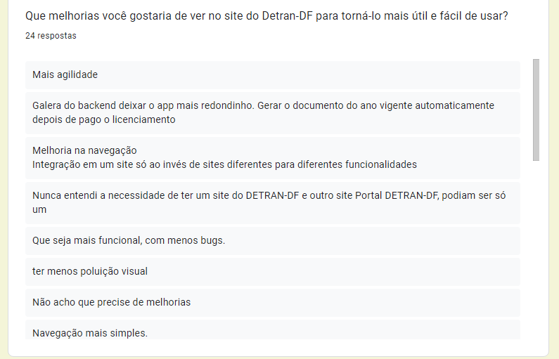
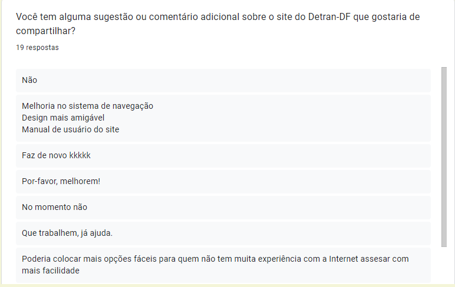

Perfil do Usuário
Introdução
A compreensão do perfil de usuário é essencial para o design eficaz de interfaces e experiências digitais. Ele nos permite criar soluções sob medida que atendam às necessidades específicas de cada grupo de usuários, melhorando assim a usabilidade, a satisfação do usuário e a eficácia do site em alcançar seus objetivos.
Este documento apresenta uma visão detalhada do perfil de usuário descoberto durante o projeto, destacando suas características distintivas, necessidades específicas e expectativas em relação à interação com o site. Além disso, oferece recomendações práticas para adaptar a interface e as funcionalidades do site para atender melhor às demandas e preferências desses usuários, promovendo assim uma experiência digital mais envolvente, intuitiva e gratificante.
Metodologia
Para tal, utilizamos do método de pesquisa, divulgando-a em diversos meios de comunicação da comunidade universitária e outras. A razão foi por conta da facilidade de divulgar e obter dados, rapidez e objetividade das perguntas orquestradas, facilitando bastante o andamento do projeto e para que sejam montadas as demais partes do projeto.
Resultados
No total, obtivemos 35 respostas, cujos tópicos estarão listados a seguir:
Questão 1: Qual é a sua idade?
A faixa etária informada se mostrou bastante variada, com a maior parte do público informado tendo de 18 a 24 anos e 49 a 56 anos.

Questão 2: Qual é o seu sexo?
O público informado, de maneira geral, foi bem dividido, mas a maior parte do público que respondeu a pesquisa é feminino.

Questão 3: Qual é a sua ocupação atual?
A maioria dos votantes é estudante, mas há uma abrangência de ocupações informadas.

Questão 4: Qual é o seu nível de escolaridade?
Também abrangente, havendo uma predominância de estudantes na pesquisa.

Questão 5: Com que frequência você acessa o site do Detran-DF?
A maioria dos usuários informou que raramente utilizam o site do Detran-DF.

Questão 6: Quais são as principais razões pelas quais você visita o site do Detran-DF?
O site se mostrou mais como uma ferramenta para consulta de multas e documentos.

Questão 7: Como você avalia a navegação do site do Detran-DF?
A maioria das respostas foram avaliando o site de forma mediana.

Questão 8: Você já teve problemas ao utilizar o site do Detran-DF? Se sim, quais?
Boa parte dos usuários relataram nunca terem tido problemas com o site. No entanto, houveram uma série de queixas, a maioria se tratam da demora nos serviços e funcionalidades do site.

Questão 9: Que melhorias você gostaria de ver no site do Detran-DF para torná-lo mais útil de fácil de usar?
Pergunta aberta, mas com diversas sugestões, a maioria sobre uma interface intuitiva e melhora na velocidade dos serviços.

Questão 10: Você já utilizou os serviços online oferecidos pelo Detran-DF? Se sim, quais foram e como foi sua experiência?
Respostas bem mistas, mas reclamações constantes em relação a interface e agilidade dos serviços.

Questão 11: Você tem alguma sugestão ou comentário adicional sobre o site do Detran-DF que gostaria de compartilhar?
Aqui decidimos abrir espaço para a opinião do usuário sobre o que poderia melhorar no site, até para servir de sugestão/ideia ao desenrolar do projeto.

Analise dos resultados
Após uma observação dos dados obtidos, podemos concluir que:
-
A maioria dos usuários do Portal Detran-DF são pessoas de 18 a 64 anos;
-
Não há predominância de gênero utilizador do site;
-
A maioria utiliza raramente o site, não costumam acessá-lo com frequência;
-
Utilizam para serviços simples, como consulta de multas, renovação de CNH, entre outros.
Bibliografia
1. Barbosa, S. D. J., & Silva, J. A. F. C. (2010). Interação humano-computador. Elsevier Brasil. Acesso em: 10 de mai. de 2024.
📑 Histórico de versão
| Versão | Data | Descrição | Autor | Revisor |
|---|---|---|---|---|
| 10/05/2024 | 1.0 | Criação da página | Filipe Carvalho | Daniel Coimbra |